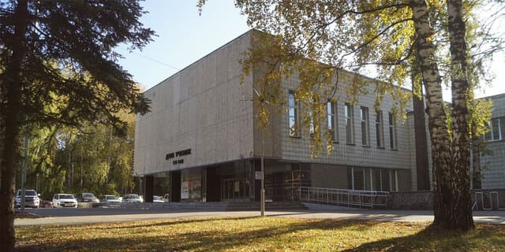
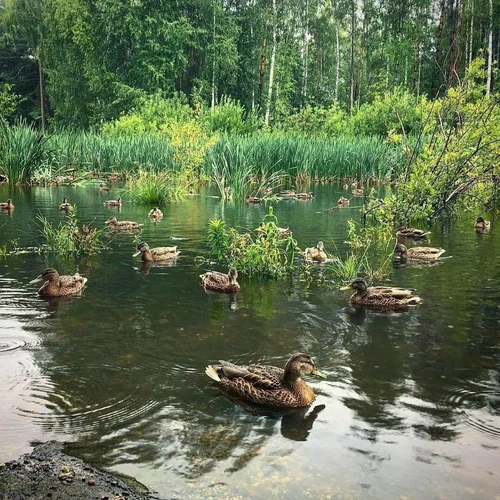

Одна из старейших улиц Верхней зоны Академгородка: здесь соседствуют памятник архитектуры — Дом учёных — и повседневная инфраструктура района, которой пользуются студенты и сотрудники соседних институтов.
Порядок, в котором вы пойдёте по этим точкам, зависит от вашего маршрута — его называют организаторы. Здесь точки перечислены просто для справки.

Один из самых значимых общественных зданий новосибирского Академгородка и памятник архитектуры регионального значения. Дом учёных создан по постановлению Совета министров РСФСР от 22 ноября 1962 года и построен в 1962–1968 годах по проекту ленинградских архитекторов Л. Лаврова, М. Левина, И. Орлова, А. Ротинова, Г. Сафоновой, Ю. Ушакова и Н. Васильевой. В здании — концертный зал почти на 800 мест, библиотека, выставочные залы, двухсветный зимний сад, ресторан и спортивные помещения.
На улице Пирогова, 25 расположена Центральная клиническая больница Сибирского отделения РАН. В стационаре около 470 коек, работают отделения хирургии, травматологии и ортопедии, урологии, терапии, кардиологии, неврологии и детское отделение — здесь оказывают круглосуточную медицинскую помощь жителям Академгородка.

Пруд в этой части Академгородка в народе называют Утиным озером: весной сюда прилетают выводки крякв и других уток, а вокруг проложены деревянные мостки и дорожки для прогулок. Место благоустраивали силами местных жителей, и сегодня это одна из самых узнаваемых зелёных точек района.
Федеральная сеть пиццерий, основанная в 2011 году в Сыктывкаре Фёдором Овчинниковым, — одна из крупнейших сетей пиццерий России и стран СНГ, известная открытой видеотрансляцией кухни и собственной IT-платформой для управления франшизой.
Небольшое кафе с блюдами азиатской кухни неподалёку от Дома учёных — удобное место, чтобы перекусить во время квеста.
«Инвитро» — федеральная сеть медицинских лабораторий и офисов, одна из крупнейших частных лабораторных служб России. Работает с 1995 года и выполняет широкий спектр анализов.
Точка сети Meps, где готовят bubble tea (чай с тапиоковыми шариками) и другие холодные напитки — популярное место у студентов между парами.
Реальные координаты и порядок точек для вашего личного маршрута присылает бот — эта страница только для знакомства с местами заранее.